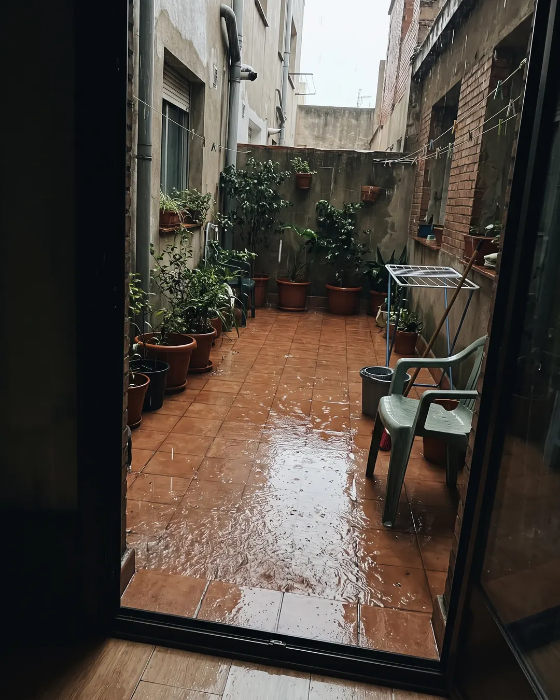
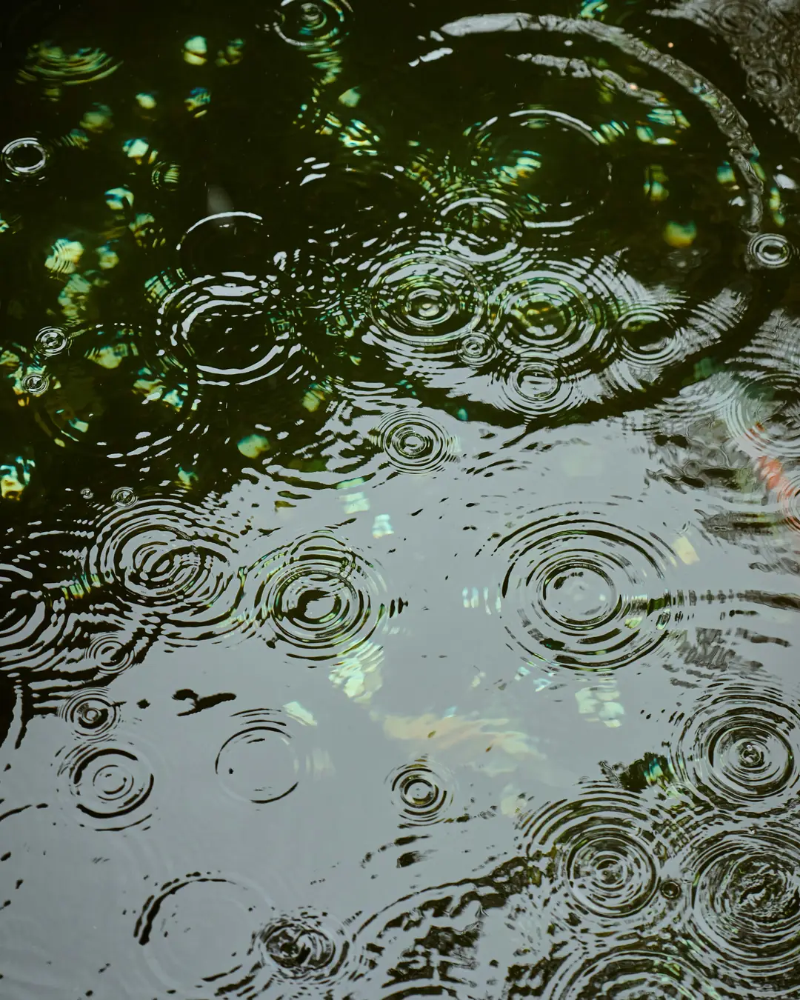
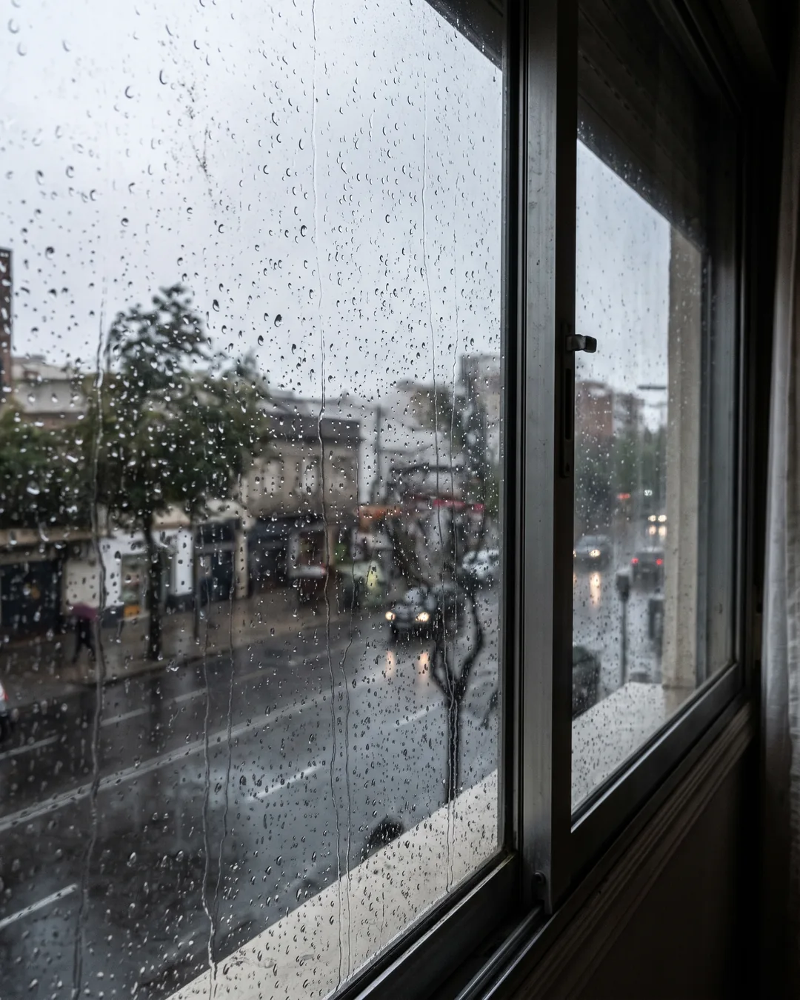
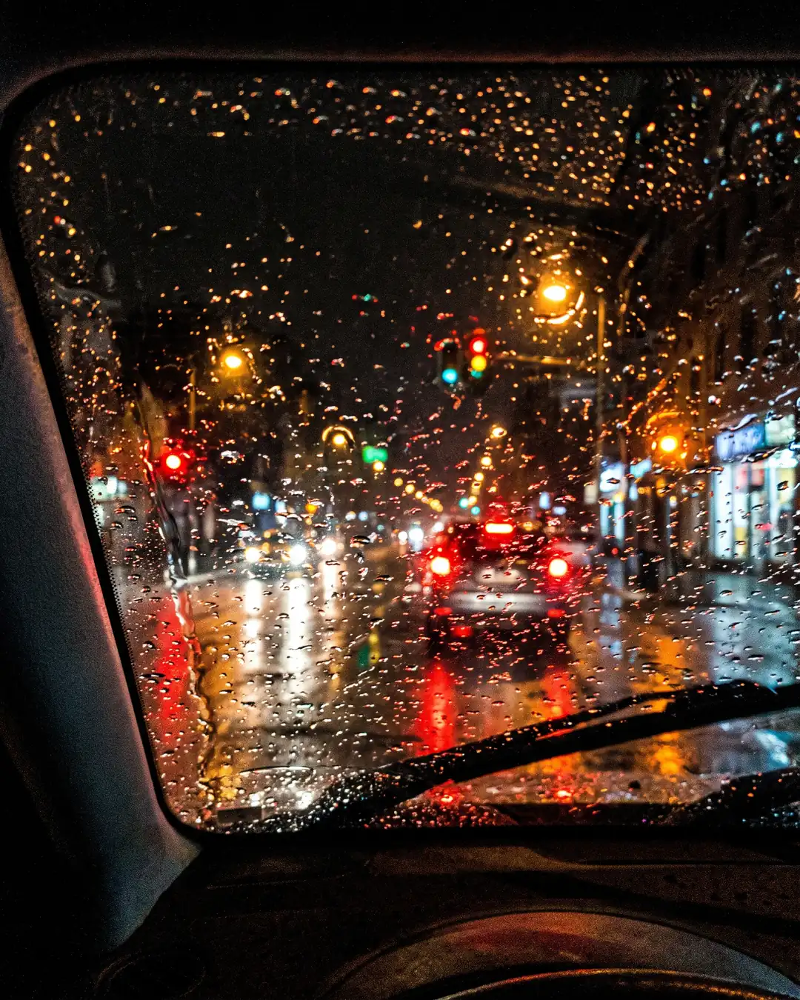

Caso n.º 12 · Lluvia
Imágenes
-

IA
La confesión del sospechoso
Lluvia cayendo sobre un patio interior visto desde una puerta abierta, con las baldosas encharcadas, macetas y una silla de plástico mojada.
-

REAL
Fotografía real
-
IA
La confesión del sospechoso
Una calle peatonal bajo la lluvia, con gente caminando con paraguas de espaldas y charcos reflejando los escaparates; foto algo movida.
-

IA
La confesión del sospechoso
Lluvia fuerte vista a través de la ventana de un piso, con gotas resbalando por el cristal y la calle desenfocada al fondo; luz gris de día nublado.
-

IA
La confesión del sospechoso
Parabrisas de un coche parado de noche con la lluvia acumulada en el cristal y las luces de un semáforo y otros coches convertidas en manchas de colores; mucho ruido.
¿Dato o Bulo?
-
BULO «La mayor cantidad de agua caída en un solo día fue de 3.000 litros por metro cuadrado.»
El récord oficial de la OMM en 24 horas es de 1.825 litros por metro cuadrado (1.825 mm).
- Se midió en Foc-Foc, en la isla de la Reunión, del 7 al 8 de enero de 1966.
- Fue durante el paso del ciclón tropical Denise.
-
DATO «El récord de lluvia ininterrumpida más larga de la historia es de 881 días consecutivos.»
Fue en Honomu Maki, en la isla de Oahu (Hawái), donde llovió sin parar de octubre de 1913 a marzo de 1916.
-
DATO «En Rusia, los habitantes vieron caer del cielo casi mil monedas de los siglos XVI y XVII.»
En julio de 1940, en la aldea rusa de Meshchery (región de Gorki), un tornado levantó un tesoro enterrado y cayeron unas mil monedas.
- Eran monedas de plata y oro de la época de Iván el Terrible.
- Lo concluyeron los meteorólogos.
-
DATO «En 2001, en la India, cayó durante más de 2 meses una lluvia roja que parecía sangre.»
Entre julio y septiembre de 2001, en la región india de Kerala llovió repetidamente de color escarlata.
- Al principio, algunos físicos propusieron un origen extraterrestre.
- Se demostró que lo causaban esporas de un alga verde (Trentepohlia).
-
DATO «En Urano y Neptuno llueven diamantes sólidos.»
Por la enorme presión y temperatura, el metano se descompone y el carbono cristaliza en diamantes que caen hacia el interior.
- Los científicos creen que se hunden en un mar de carbono líquido.